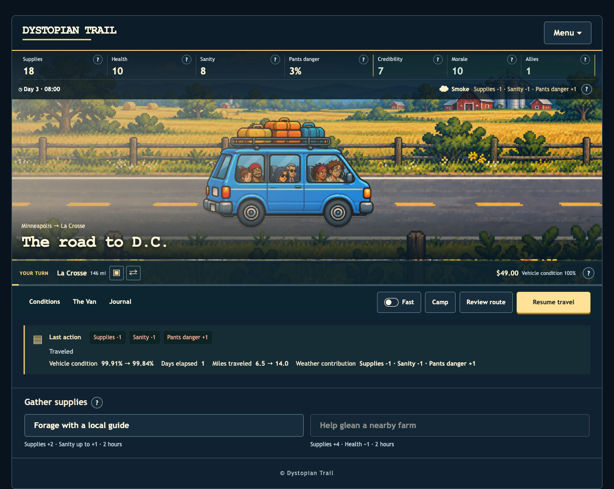
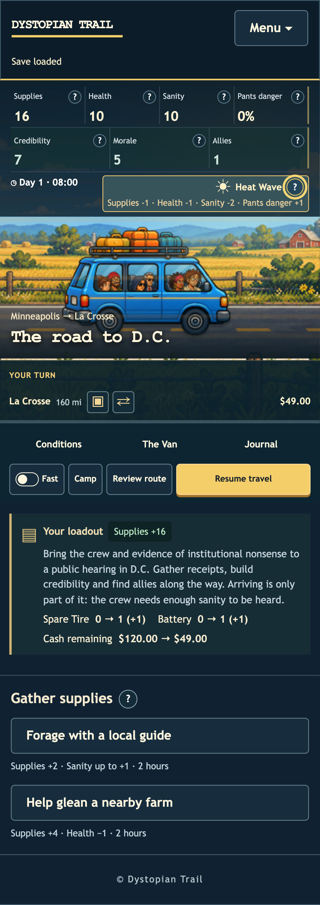
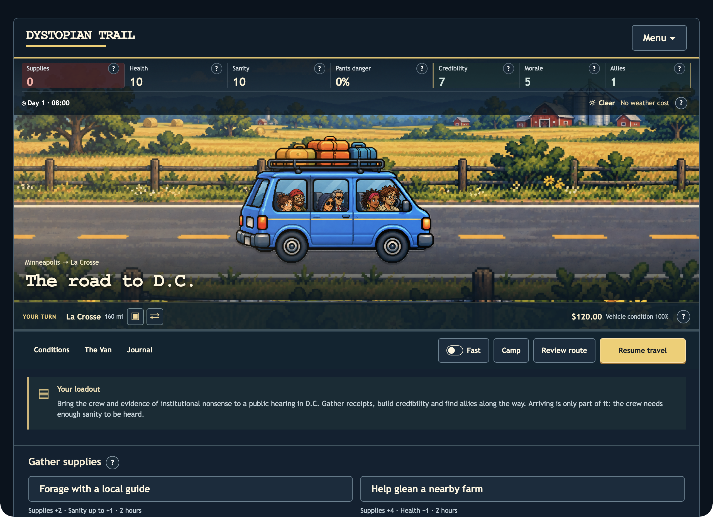

← Implementation reviewMore trail. Less control panel.
Weather charges apply automatically, with the latest cost and a brief change highlight beside the condition icon. Protection and exposure are included. Opening help and reloading a saved journey never charge the cost again.
Conditions, The Van and Journal now replace the mode buttons. Fast is a saved toggle beside Camp, Review route and Resume travel. Step mode and the separate details row are removed. The travel scene gains 60 px on desktop and 40 px on phones.
Play the current preview · Validation and limitations

Actual engine weather costs, continued travel, then reload.
Exposure display fixture · weather effects after protection and exposure.Real Safari
21 native WebDriver checks passed after the Mac was unlocked, including the final controls, weather costs, offline play and updates.

Safari 26.6.2 · final build